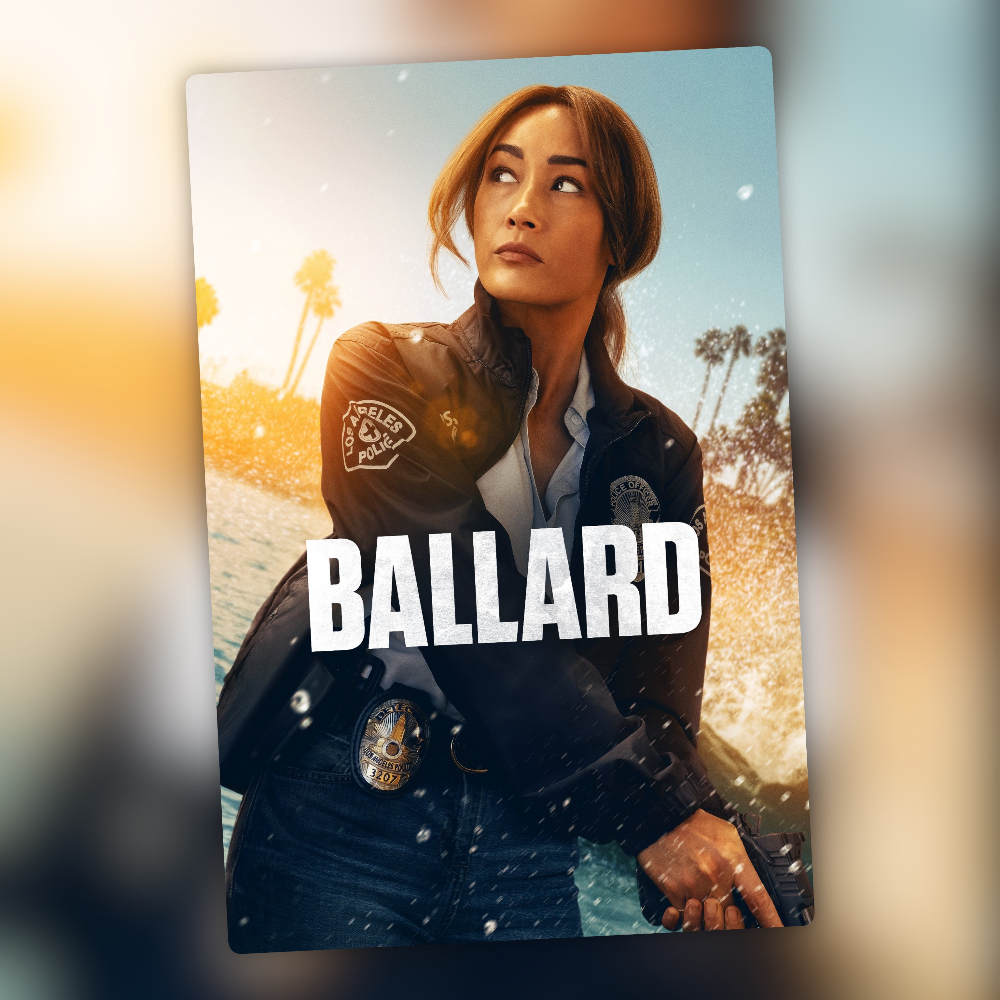

Ballard — T1 (2025)
Casos sin resolver y una detective que viene a quedarse

Ballard se mete de lleno en el universo de Michael Connelly y se centra en Renee Ballard, una detective de la policía de Los Ángeles interpretada por Maggie Q. La serie gira alrededor de los casos abiertos que la policía ha ido dejando atrás y de todo el trabajo que hay detrás de intentar resolverlos.
La historia arranca después de un enfrentamiento con un detective de homicidios, un conflicto que acaba teniendo bastante peso en lo que viene después. A partir de ahí, Ballard tiene que lidiar tanto con los casos que investiga como con los problemas que encuentra dentro del propio departamento.
La serie mantiene ese tono oscuro y bastante realista que ya conocemos de las historias de Connelly. Me gusta cómo se detiene en el trabajo policial y en todo lo que hay detrás de un caso: investigar, buscar pistas, volver sobre historias que parecían cerradas y tratar de encajar las piezas. No todo consiste en llegar a una escena del crimen y detener al culpable en cuarenta minutos.
Maggie Q está muy bien como protagonista y es quien sostiene la serie. Ballard es un personaje complejo, con sus propios problemas y una forma de hacer las cosas que no siempre encaja con quienes tiene alrededor.
El reparto secundario también está bien. Hay varios personajes con historias propias y no están simplemente ahí para acompañar a la protagonista. Así la serie tiene algo más que ofrecer aparte de los casos que Ballard tiene entre manos.
El ritmo es sólido y la atmósfera tiene ese aire de novela negra. No busca convertir cada episodio en una montaña rusa y deja que las investigaciones avancen poco a poco.
No me parece una serie revolucionaria dentro del género, pero tampoco lo necesita. Tiene buenos casos, una protagonista que funciona y ese tono de novela negra que encaja muy bien con el universo de Connelly. Me ha gustado lo suficiente como para querer seguir con Ballard, aunque no me ha parecido imprescindible. Es una buena continuación de ese universo, sobre todo cuando se centra en la protagonista y en los casos que intenta resolver.
Ficha técnica
- Título original: Ballard
- Creada por: Michael Alaimo y Kendall Sherwood
- Basada en: las novelas de Michael Connelly
- Reparto principal: Maggie Q, Courtney Taylor, John Carroll Lynch, Michael Mosley, Rebecca Field, Victoria Moroles
- Temporada: 1 (10 episodios, 2025)
- Plataforma(s) actual(es) en España: Prime Video